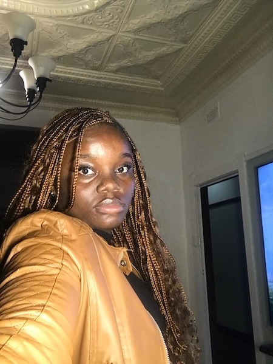

Davina Luhilu | WDD 130

Hey. My name is Davina Luhilu. I'm a young Congolese female. I love dancing, writing, reading and listening to music. I hate cooking with a passion but according to people I'm a great cook. I can never run to save my life but I'm willing to run for a great physique. I love watching documentaries, movies, series and nursery rhymes.